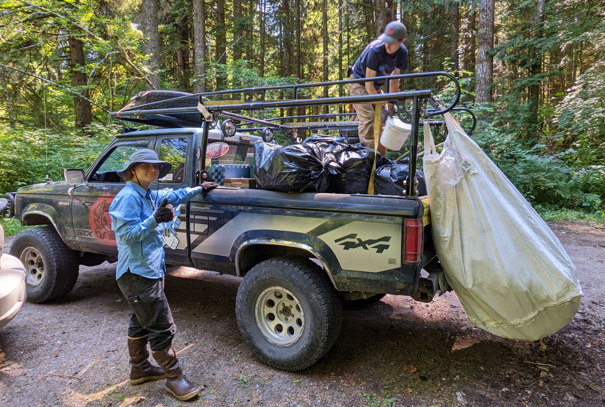

In January of 2022 I bought a $1000 1991 Ford Ranger to participate in events with a group caled the Gambler 500 . We are a disorganized group of people who like to drive bad cars, go camping, and pick up trash on public lands. More trash, in fact, than any other group in the world.
This has been a great opportunity for me to learn about vehicles and suspension and hone my wrenching skills. At this point there aren't a lot of jobs I'm afraid to tackle on this truck in the street in front of my house.
Loaded up after cleaning up a dump site at Run Gifford Run 2022